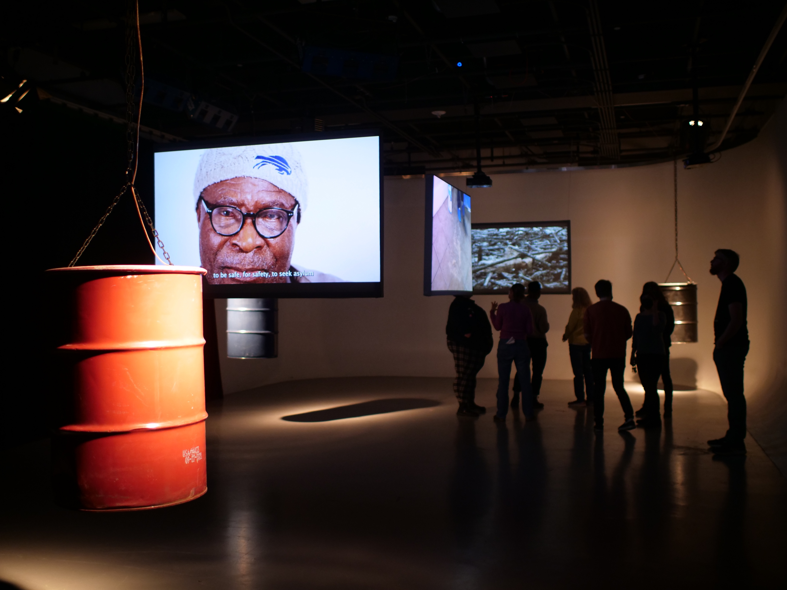
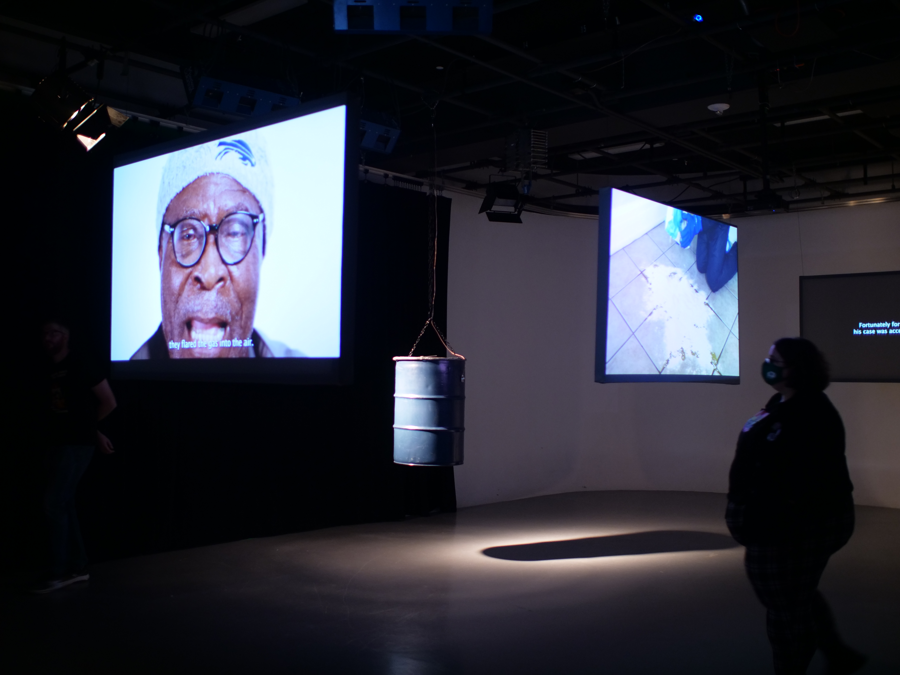
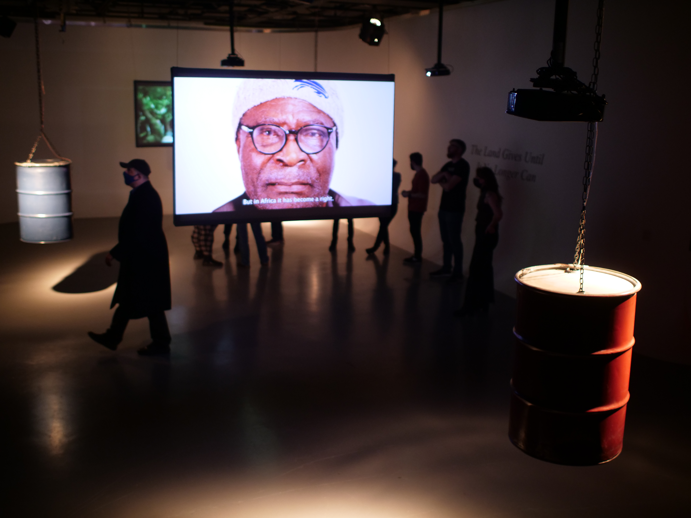

The Land Gives Until It No Longer Can, University at Buffalo, 2022
This project featured three 55-gallon oil drums suspended from the ceiling, each equipped with a transducer, accompanied by three rear-screen projections. Instead of hearing sound directly from the projection screens, visitors experienced the audio emanating from the oil drums—emphasizing the connection between the visual narratives and the physical objects conveying them.

Each projection presented a distinct perspective on the oil crisis in the Niger Delta—political, personal, and environmental. This triptych structure allowed viewers to navigate complex narratives from multiple entry points, reinforcing the layered nature of ecological harm.

The spatial arrangement of the installation invited movement and interaction, prompting visitors to listen closely, move between screens, and consider their physical proximity to the work as part of the experience.